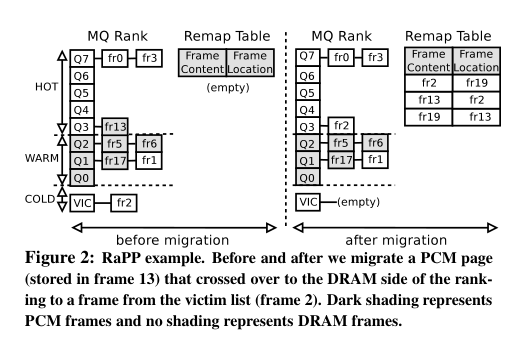
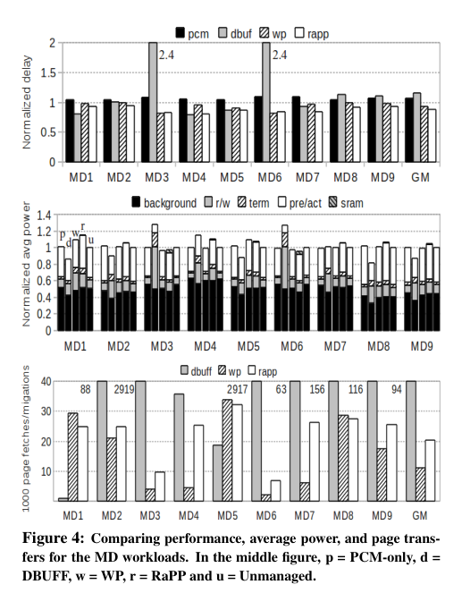
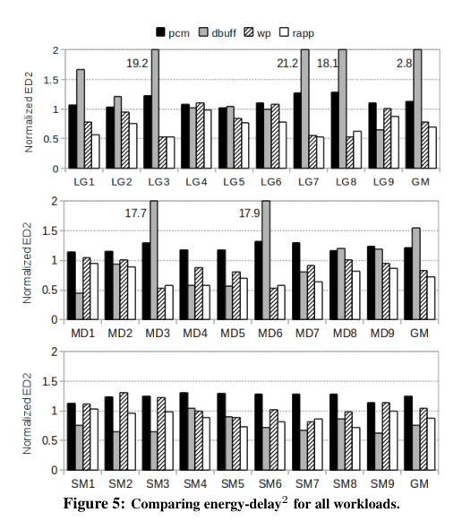
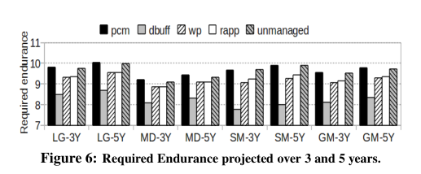
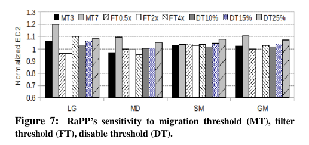

本报告由大模型自动生成，可能存在理解、归纳或数据转述错误；请以原论文为准。 Page placement in hybrid memory systemsLuiz Eduardo da Silva Ramos, Eugene Gorbatov, Ricardo Bianchini · Proceedings of the international conference on Supercomputing · 2011 · 原文 · PDF 图表提取提示：报告提到的 Table 1 未能自动裁出；请查看原论文 PDF。 报告模型：gemini-3.1-pro-preview / high 这是一篇对发表于 ICS 2011 的论文《Page Placement in Hybrid Memory Systems》（混合内存系统中的页面放置）的详细解析。本文按论文的自然章节逻辑展开，详细阐述其背景、设计机制、实验评估及结论。 背景补充与系统全貌在深入本文之前，首先建立计算机内存子系统的全局视角。现代计算机的存储层级通常为：CPU 计算核心 SRAM 缓存（包含最后一级缓存，简称 LLC） 主存（Main Memory） 磁盘或固态存储。本文的研究焦点位于主存这一层级。数据在 LLC 和主存之间以缓存行（Cache Line，通常为 64 字节）为基本传输单位；而操作系统管理内存空间的最小粒度是页面（Page，本文假设为 8KB）。在系统组件上，主存由内存控制器（Memory Controller, MC）、内存通道（Channel）、双列直插式内存模块（DIMM）组成。DIMM 内部包含多个芯片，芯片内部分为多个排序（Rank）和块（Bank）。每个 Bank 包含由存储单元阵列和行缓冲（Row Buffer）组成的二维矩阵。当处理器请求数据时，MC 发出物理地址，目标行的数据会被读入行缓冲，随后再将特定的列数据通过通道传回。 摘要与引言 (Abstract & Introduction)问题背景：随着多核 CPU 中核心数量、并发线程和虚拟机的增加，系统对主存容量的需求急剧上升。当前主存普遍采用同步动态随机存取内存（DRAM）。DRAM 速度快，但由于其物理特性，消耗巨大的空闲功率、刷新功率和预充电功率。随着容量增加，DRAM 的能耗甚至开始逼近 CPU 本身的能耗。 潜在替代方案：架构师们提出引入相变内存（Phase-Change Memory, PCM）。PCM 是一种非易失性存储技术，它具有字节可寻址（Byte-addressable，即可以像 DRAM 一样按字节读写，而非像 Flash 那样按块擦除）、极低的空闲能耗、无需刷新、断电不丢数据等优点。然而，PCM 的致命弱点在于：读写速度（尤其是写速度）显著慢于 DRAM，写操作的动态能耗高，且写入寿命（Endurance）有限（存储单元在经历一定次数的编程后会永久失效）。 已有方案及其缺陷：为了结合 DRAM 的速度和 PCM 的容量，学术界提出了 DRAM+PCM 混合内存系统，通常包含少量 DRAM 和大量 PCM。但早期研究存在明显局限：例如 Qureshi 等人（文献 [28]）提出将 DRAM 作为 PCM 前的纯硬件缓存（DBUFF），这不仅浪费了整体内存容量，而且在遇到局部性差的工作负载时会导致严重的缓存颠簸（Thrashing），反而降低性能并增加能耗；Zhang 等人（文献 [37]）提出由操作系统（OS）在扁平地址空间中基于写频率进行页面迁移（WP），但这种设计完全由 OS 驱动，反应迟钝，且忽略了读密集型页面在 PCM 中带来的巨大延迟代价。 本文核心大意：作者提出了一种名为 RaPP (Rank-based Page Placement，基于排名的页面放置) 的新型混合内存架构。这是一种由硬件（内存控制器，MC）驱动、软件（操作系统，OS）辅助的页面管理策略。MC 负责在后台监控所有内存页面的访问频率和写强度，对物理内存帧（Frame，即物理页面）进行排名，并在 DRAM 和 PCM 之间透明地迁移数据。OS 周期性地同步这些地址映射。该设计致力于优化系统级别的 （标量，Energy-Delay Squared，能量与延迟平方的乘积，原文未说明具体单位，用于综合衡量能效和性能）。 混合主存的技术背景 (Background)为了理解本文的设计，必须区分 DRAM 和 PCM 在底层的硬件强制约束。 DRAM：每个存储单元是一个晶体管和一个电容（1T/1C）。因为电容会漏电，硬件强制要求控制器定期执行“刷新”（Refresh）操作，这是背景能耗的主要来源。读取 DRAM 会破坏电容电荷，因此读出到行缓冲后，必须执行“预充电”（Precharge）将数据写回阵列。本文采用**闭页管理（Close-page management）**策略，即每次列访问后，MC 都会立即关闭（预充电）该行，这通常在多核系统中表现更好。 PCM：每个存储单元是一个存取晶体管和一个硫族化物电阻（1T/1R）。通过加热并控制冷却速度，材料会在高阻态（非晶态，代表 0）和低阻态（晶态，代表 1）之间转换。PCM 的读取是非破坏性的，不需要预充电和刷新，因此背景能耗极低。此外，PCM 支持多值单元（MLC）制造工艺。 关键建模假设：作者在本文中做出了一个重要的设计选择与假设：假设 PCM 采用 3-bit MLC 技术，这使得其存储密度达到 DRAM 的 4 倍；同时乐观地假设 PCM 的外围电路（行缓冲、解码器等）在性能和功耗上与 DRAM 完全相同。为了减轻写延迟，作者在架构侧假设 MC 仅将行缓冲中被实际修改的缓存行写回 PCM 阵列（原文未说明具体证明，仅指出类似优化曾在先前文献中使用）。 混合主存设计与 RaPP 策略 (Hybrid Main Memory Design)本节是全文的核心，详细描述了架构侧的设计。RaPP 的目标是：(1) 将对性能至关重要的页面和频繁写入的页面放在 DRAM 中；(2) 将非关键和极少写入的页面放在 PCM 中；(3) 将对 PCM 的写操作分散到多个物理帧以实现磨损均衡（Wear-leveling）。 页面排名机制 (Ranking Frames)因为 OS 位于抽象层上方，无法察觉被处理器乱序执行或多线程隐藏的缓存未命中延迟，所以 RaPP 将监控任务交给了硬件内存控制器（MC）。MC 监控最后一级缓存（LLC）对每个物理帧的未命中（Misses）和写回（Write-backs），以此作为页面重要性的代理指标。 作者修改了原本用于磁盘缓存的 MQ (Multi-Queue) 算法 来对物理帧进行排名。硬件（MC）中维护了 15 个 LRU（最近最少使用）队列，编号从 0 到 14。队列编号越高，表示页面越“热门”（Popular）。
页面迁移过程 (Migrating Pages)触发条件：当任何一个 PCM 帧在队列中晋升到队列 5（即引用计数达到 次，此阈值定义为迁移阈值 (Migration Threshold, ，标量，单位为访问次数)）时，MC 就会安排将其迁移到 DRAM。目的地是从上述的 DRAM 受害者列表中挑选的第一个帧。 三方交换机制 (3-way Swap)：这里存在一个由硬件写寿命限制逼出的特殊软件/硬件协同设计。如果仅仅是直接互换 DRAM 页面和热门 PCM 页面，那么被换出的 DRAM 页面总会覆盖原来的那个 PCM 物理帧，导致某些 PCM 帧频繁被写。为了实现磨损均衡，RaPP 采用如图 2 所示的三方交换： 
为了掩盖迁移带来的延迟，作者对 PCM 的 DIMM 进行了硬件修改（注意，为了避免增加 DRAM 成本，仅修改了 PCM）：每个 PCM Rank 增加了额外的一对行缓冲（Row-buffer），专用于后台迁移，从而绕过原本正常的读写数据流。 软硬件协作机制与鲁棒性由于物理地址在后台被 MC 偷偷互换了，必须有一种机制通知 OS，否则 OS 会读取到错误的数据。作者在 MC 中引入了一个 28KB 的硬件哈希表，称为 RemapTable (重映射表)。
自禁用机制 (Self-disabling)：为了防止某些工作负载发生无意义的乒乓效应（刚迁移到 DRAM 又被赶回 PCM），RaPP 统计“糟糕的迁移”比例。如果在 1 毫秒的周期内，糟糕迁移比例超过了禁用阈值 (Disable Threshold, ，标量，默认 5%，单位为百分比，无量纲)，RaPP 会自动关闭硬件监控和迁移，退化为无管理状态。 实验评估 (Evaluation)本文通过模拟器（基于 M5 的前端提取 Trace，结合自定义的内存定时和功耗模型模拟器）评估了系统。这里的架构与 EDA 跨层接口体现在：跨层接口传递的量包括时序参数（如 ）和电流参数（如激活/预充电电流）；评估目标为系统级 和运行时间；建模假设包括假设 PCM 外围电路在性能和功耗上与 DRAM 相同，以及对 DBUFF（如无查找开销、全相联结构）和 WP（如无数据结构和硬件修改开销）的乐观模拟假设；这些抽象带来的信息损失在于忽略了实际 PCM 外围电路的物理开销以及对比方案在实际硬件实现中的真实延迟和能耗代价。 核心实验设置：模拟了一台 8 核服务器。关键选择：为了充分暴露 PCM 高延迟对计算的影响，作者特意选用了**顺序执行（In-order）**的核心，因为乱序执行会掩盖内存延迟。 结果分析（结合图 4、图 5）：  
寿命分析 (Endurance)： 作者使用公式评估寿命（图 6 基础数据）： 
敏感度分析 (Sensitivity analysis, 图 7)： 作者对迁移阈值 (MT)、过滤阈值 (FT) 和禁用阈值 (DT) 进行了扰动。结论是：系统对 MT 最为敏感（图 7 表明如果 MT 设为 即 MT7，会严重拉垮大型负载的 ）；而 DT 设置得越高（容忍更多错误迁移），系统性能下降越明显。  总结主线这篇文章的研究主线清晰地映射了“硬件约束 架构折中 软硬协同优化”的发展脉络。
最初，面临多核扩展带来的主存容量与能耗矛盾，学术界试图引入大容量低功耗的 PCM。但受限于PCM 读写慢、寿命短的底层材料物理事实（硬件约束），必须将 DRAM 与 PCM 混合使用。
早期的架构设计要么因为纯硬件缓存化导致容量浪费和缓存颠簸，要么因为纯软件 OS 管理导致反应过慢并忽略了读延迟。
由此，作者一步步引出了本文的解决方案 RaPP：一种把“重活”（细粒度监控与数据腾挪）交给底层硬件（内存控制器），而把“映射一致性”交给高层软件（OS 周期性提交 局限与扩展边界：本文的结论深度依赖于“PCM 能够达到 DRAM 的 4 倍密度且外围电路开销相当”的乐观假设。如果在未来的实际工艺中，为了解决 PCM 寿命问题付出了过大的外围面积代价，导致密度无法达标，或者读取延迟比预期更悲观，那么“将整个内存视为扁平空间进行迁移”的代价可能会高于预期。读者不应将本系统对 的优化幅度简单推广到非对称性更强或具有根本不同接口（如 CXL 连接的远端内存）的层级体系中。 |